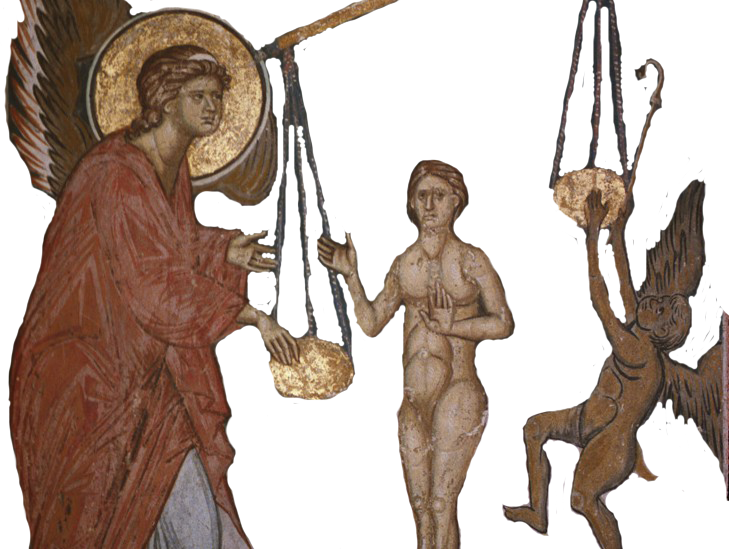

Препуна милости, Пречиста Дјево Богородице, Мајко милосрђа и човекољубља, веома велика Надо и Уздање наше! О, Мајко Возљубљеног, веома жељеног и изнад сваке љубави узвишеног Спаситеља Исуса Христа, Човекољупца и Бога мога, Светлости помрачене душе моје! К Теби ја многогрешни и без наде у другога прилазим, Изворе милосрђа и човекољубља. Помилуј ме, помилуј ме, вапијем к Теби болно, смилуј се на мене рањенога, међу љуте разбојнике палога, и са хаљином у коју ме обуче отац. Авај мени који лежим наг и без учињених добрих дела! Засмрдеше и труну ране моје од неразумног живота мога. Заштитнице моја, Пресвета Богородице, молим Те понизно, погледај на мене милостивим оком Својим, и не презри мене помраченог и целог укаљаног, свог у варљиву сласт утопљеног, и у грех палог, без наде да могу сам да устанем. Смилуј се на мене и пружи ми руку помоћи, подигни ме из дубине грехова, о Радости моја! Извуци ме, избави ме од оних који су ме опколили, и нека засија светлост лица Твога на слугу Твога. Спаси пропалог, очисти нечистог, подигни у зло палог, јер Ти све можеш, јер си Мајка Бога Који може све. Излиј на мене милост срца Свога, и дај и мени да имам срце милостиво. Тебе као једину и истиниту наду стекох у животу своме. Не одбаци мене који к Теби прилазим, но погледај на тугу моју, Дјево Богородице! Душевне жеље моје и ове молитве прими и спаси ме, Посреднице спасења мога! Амин
Од нечистих уста мојих прими молитву ову, о Пречиста, Чедна и Непорочна Дјево Богородице! Не оглуши се о речи моје, о Радости моја, но ме погледај и помилуј, Мајко Творца мога! За време живота мога не одступај од мене, јер си Господарка моја и на Тебе сву наду своју полажем. Стога и у време смрти моје дођи ми, Помоћнице моја, и не посрами ме ни тада. Знам, знам, Дјево Пречиста, за многе грехове сам крив, и као покајник дрхтим помишљајући на час суда. Но, Радости моја, покажи ми тада лик Свој, излиј на мене милост Своју, Заступнице спасења мога. Очисти ме, Господарице, уклони гнев злих духова и страшна и одвратна испитивања њихова. Избави ме злоба њихових и сву тадашњу тугу и жалост моју у радост претвори, светлошћу и светошћу Својом. И удостој ме да без тешкоћа прођем крај начала и власти таме и да се удостојим да се поклоним на Небесима Христу Богу нашем, који вечно у слави пребива са Беспочетним Оцем Његовим и Пресветим и Благим Духом Његовим у све векове векова. Амин.
О, Пресвета Владичице моја Богородице, од Ангела, Архангела, Херувима и Серафима узвишенија и од свих Светих најсветија, Дјево Свенепорочна, Мати Божија! Спаси ме, спаси ме смиреног и грешног слугу Твога. Ти си ми све, Свемилостива Госпођо, сву наду моју у Бога, преко Твог заступништва, полажем и немам другог заклона за спасење осим Тебе, Сведобра и Свемила Богомајко! Ти си снага моја, Владичице, Ти си сила моја, Ти си радост и туга моја, Ти си заклон мој у искушењима. Ти си усправљење моје у падању, Ти си спасење моје и најсигурније надање моје. О, Мати Творца и Господа мога! Помози ми, неуком пливачу на узбурканој пучини животнога мора, тешко обореном и у беду палом, у гресима потопљеном. Пружи ми руку и помози ми, Помоћнице моја, и избави ме из таме дубоке, да не останем у бесконачном очајању. Мноштво грехова и страсти подигоше се на мене, и по жељи мојој учињени греси притискују ме. Но Ти, Мајко милог срца, једино пристаниште где нема порока, научи ме да не грешим и спаси ме. Ти си онима без наде и изгубљенима, па и мени свејадном, једина Нада и Заступница спасења, и сада и увек и у векове векова. Амин.
Преблагословена Богородице, Ти си уздање моје, Ти си ми тврда стена и мило надање и склониште за спасење, јер сам изнемогао од напада страсти мојих. Спаси ме од свих непријатеља који гоне душу моју и лове је разним искушењима. На путу овом по којем идем многа осећања обузеше ме, многе саблазни, многе неугодности, многе, многе лажи. Многе слабости душевне и телесне ухватише ме, те стално упадам у грехе, и већ ја, окајани, стекох осећања злога духа, везан сам и они ме држе, и шта да радим очајан, ја не знам?! Ако желим да се покајем, безосећањем и тврдоглавошћу везан сам, ако почнем да плачем, немам смирења срдачног, и ни једна кап сузе не појави се. Авај покајања мога! Авај беде моје! Авај ништавила мога! Коме ћу прибећи за учињене преступе, осим к Теби Пресвета Мајко Господа и Спаса нашега. Свима који су без наде Ти си једина Нада, Тврђава и Заштитница, и зато се Теби они обраћају! Не одбацуј ни мене грешнога, Тебе сам нашао као једину утеху у животу моме. Пресвета Богородице, Дјево Марија, к Теби јединој у свакој муци прилазим са слободом. Не заборави ме у животу овом, а у дан смрти моје дођи ми у помоћ, Помоћнице моја, да се непријатељи моји постиде када Те угледају, и да благодаћу Твојом буду побеђени, Владичице и Посреднице у спасењу моме. Амин!
Ко је достојан да Тебе хвали, Пресвета Дјево, чија су уста способна Тебе да величају? То сваки ум превазилази! Сва велика и славна дела која су се догодила са Тобом, јесу тајне, Преблагословена Богородице, и превазилазе сваки смисао и речи. Лепоти девојаштва Твога и превисокој чистоти Твојој задивише се Херувими и уплашише се Серафими, чудесно рођење Твоје ни човечији ни Анђеоски језик исказати не може. Од Тебе се Вечни и Јединородни Син Божији, Бог Реч, неисказано оваплотио, родио се, и са људима живео, и Тебе као Мајку Своју неизрециво у слави уздигао. Као Царицу свих створења Те показа, а нама Те даде као сигурно уточиште спасења. Због тога сви који под покров Твој прилазе, различитим тугама и болестима обухваћени, примају од Тебе велике утехе и оздрављења, и Тобом се од разних беда спасавају. Ти си заиста Мајка свих ожалошћених и бригама животним оптерећених. Радост си тужних, Лекарка болесних, Чуварка младих, Помоћница остарелих, Похвала праведних, Спасење и Надање грешних и Путовођа ка покајању. А свима увек посредништвом Твојим помажеш и све заступаш, пуна доброте према онима који прилазе к Теби с вером и љубављу. Ти и мени помози очајном, ради трудова мојих, Заступнице мила рода хришћанског! Помози ми да не останем до краја у гресима, јер немам кога другог да ме заштити и покрије, осим Тебе. Владичице, Мајко Живота, не напуштај ме и не презири ме! Ти благодаћу Божијом знаш све судбине људске, спаси ме, недостојног слугу Твога, јер си Благословена у све векове векова. Амин.
Теби предајем у заштиту живот мој и по Богу сву наду спасења мога полажем на Тебе Владичице, Дјево Богородице! Моли Те, слуга Твој, не презри ме што имам безброј грехова, но погледај на тугу моју, и у недоумици подај ми олакшање и утеху, да не бих до краја погинуо. Рашири десницу Своју, Чиста, омиј ме од нечистоте злих дела мојих и постави ме на прави пут заповести Христа, Цара и Бога мога, и да их усрдно испуњавам, помоћи Твојом оснажен. Од грехова мојих опаких избави ме, Владичице, и покајање спасоносно ми подари, да га принесем ка Сину Твоме и Богу, Материнским заступништвом Својим. Светлости неисказана, Ти светлошћу несхватљивом сијаш, осветли таму моју душевну, у којима се безбројни греси крију. Радости моја, избави ме од мноштва невидљивих врагова, греси моји су тешки и много их имам, врази су моји врло опаки, смрт ми је близу, савест ме моја изобличава, гризе, место ме огњено плаши, црв непрестани, шкргут зуба, крајња тама пакла у страх ме уводи, јер ме очекује плата по делима мојим грешним. Авај мени! Шта ћу чинити тада и коме ћу прићи да би спасена била душа моја? К Теби јединој, Слатка Марија Богородице Преблага! На Тебе се уздам, у горчини смрти, Избавитељице свих оних који Те зову из пакла љутог. Ти и мени помози, Доброто, јер нећу имати тада ниоткуда помоћи, осим Тебе, Свеопевана. Спаси ме од ужаса смртнога часа и зла нечистих духова и од митарстава у ваздуху после смрти. Јави се, молим Те, покажи ми тада Пресвето лице Твоје, Владичице, и не остави ме без помоћи. О, мила Мајко, осврни се милошћу к мени, јер сам се делима злим лишио милости Небеске. И умоли Онога кога си родила у телу, Христа Спаситеља и Бога нашега, који је на Крсту, нас ради, пречисту Крв Своју пролио, да и ја будем причасник заслуга Његових пред Оцем Његовим. И да ради њих примим опроштај грехова и вечно спасење и прославим неисказану љубав срца Твога, Пресвета Богородице, и бескрајно милостиво заступништво Твоје у бесконачном животу будућих векова. Амин.
Радуј се, Дјево Богородице, Пристаниште и Заступништво сиромашној души мојој и Надо спасења мога! Радуј се, јер си радост примила од Ангела који Ти је јавио благу вест да ћеш родити Бога Реч! Радуј се, јер си носила Творца света у утроби Твојој! Радуј се, јер си родила у телу Бога, Спаситеља света! Радуј се, јер си у рођењу сачувала дјевство! Радуј се, јер си од мудраца дарове примила и видела их како су се поклонили Ономе кога си Ти родила! Радуј се, јер су Те и пастири посетили, који су речи анђелске слушали о Њему, и Теби то испричали, а Ти си све то у срце своје слагала! Радуј се, јер си Младенца Исуса, Сина Твога и Бога, у храму међу учитељима закона нашла и обрадовала Му се! Радуј се, јер иако си страшне болове на крсном страдању, распеће и смрт Сина Твога и Бога видела, у слави Небеској са ученицима Његовим си Га гледала! Радуј се, јер си родила Онога који је послао Духа Светога у виду огњених језика на ученике своје! Радуј се, јер си на земљи анђелским животом живела! Радуј се, јер си чистотом и светошћу све анђелске чинове и све свете ликове превазишла! Радуј се, јер си при престављењу своме славом узвеличана, доласком по душу Твоју Сина Твога и Бога! Радуј се, јер си се после три дана васкрсла јавила Апостолима Твојим! Радуј се, јер си на Небу од Оца и Сина и Духа Светога дијадемом вечног царства украшена! Радуј се, јер си од свих Небеских сила песмама прослављена! Радуј се, јер си села у славу Божанства, пред престо Пресвете Тројице! Радуј се, јер си Бога са човеком грешним помирила! Радуј се, Небеских и земаљских створења Господарице и Царице! Радуј се, јер си се удостојила да је све могуће заступништву Твоме! Радуј се, јер се сви верни, који Тебе призивају, заступништвом Твојим спасавају! Радуј се, јер се Тобом тужни теше, болесни исцељују и страдалници на време помоћ добијају! Молим Те, обрадована Владичице, покрени и у мени тугу због грехова мојих и даруј ми радост спасења. Подари ми сузе утехе, непрестано умиљење, истинито покајање и савршену поправку живота. Не гнушај се мене, Владичице, но прими милостиво овај молебни глас мој, који ја убоги Теби приносим. Приђи ми у помоћ у време када будем без помоћи, у часу страшном, када се душа моја буде раздвајала од окаљаног тела мога. Тада ми приђи, молим Те, и ослободи ме од грехова мојих, и од казне за њих вечне, да се не би радовали зли дуси нити геена огњена. О, Владичице моја, не допусти да душа моја види страшно мучење које су јој демони припремили, но приђи и спаси слугу Твога у часу оном ужасном, да Те славим у векове, јер си Ти једина Нада моја и Заступница спасења мога. Амин.